True unicellular extremophiles capable of living in the full spectrum of temperatures, chemical soups and atmospheres. They form a kaleidoscopic range of patterns and colours based on their method of metabolism. They derive energy from photosynthetic, chemosynthetic or thermosynthetic processes. These are believed to be the precursors for many lifeforms and are often found in conjunction with other Species. Links between the biochemistry of Bacterial colonies and neighbouring organisms are likely but as yet unproven.
See Bioforge for up to date statistics and prices.
Variant Deterministic: Stellar Class / Material
Bacteria is one of the Genera with a dual variant deterministic. The cross-Species rule for stellar class determinant holds true, i.e. Stellar Class X = Variant Colour Y across all stellar class deterministic Species within the Genus.
For stellar class deterministic Species in such Genera it is also possible to state generalised planetary body type and atmosphere preferences as these show a relatively limited set of values. The same is not true for the Material deterministic Species. These show considerably more differentiation, to the extent that no generalisation will be made but each Material deterministic Species treated individually.
Minimum Colonial Separation: 500m
| Stellar Class | O | B | A | F | G | K | M | L | T | TTS | Ae | Y | W | D | N |
| Variant | Tu | Gy | Ye | Li | Em | Gr | Te | Sg | Re | Mr | Or | Mv | Am | Oc | In |
Planetary Body Type: Rocky or High Metal Content
Atmosphere: Ammonia, Carbon Dioxide, Sulphur Dioxide or Water
Gravity: Less than 0.62G
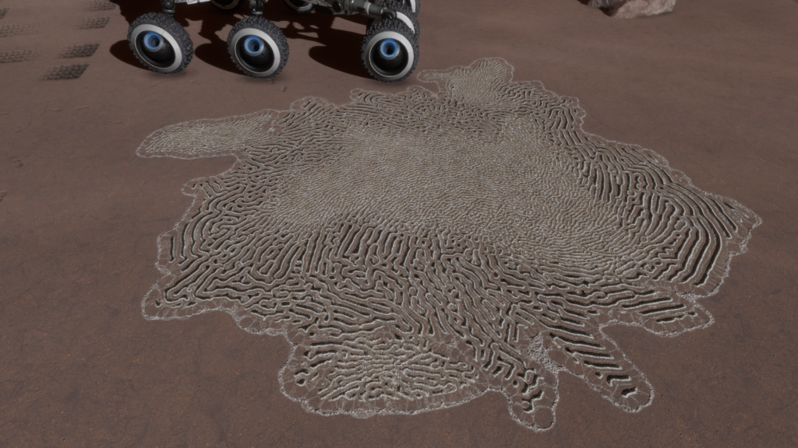
A Bacterial Species found in ammonia-based atmospheres that lives in sunlight. A colony’s appearance resembles an intricate maze.
Planetary Body Type: High Metal Content (37%) or Rocky (63%)
Atmosphere: Ammonia
Volcanism: Insignificant
| Minimum | Average | Maximum |
| 57.61 | 166.68 | 187.16 |
| Minimum | Average | Maximum |
| 0.000986923868739206 | 0.002373848484142572 | 0.0471304772267456 |
| Minimum | Average | Maximum |
| 0.04 | 0.19 | 0.38 |
Galactic Arm Preference: No Preference
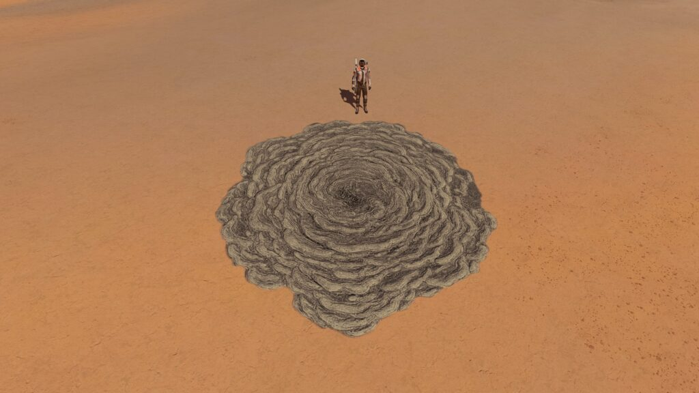
These Bacteria thrive on sunlight in Carbon Dioxide atmospheres. They cause blanket coloration across a planetary surface.
Planetary Body Type: High Metal Content (28%) Rocky (72%)
Atmosphere: Carbon Dioxide
Volcanism: Insignificant
| Minimum | Average | Maximum |
| 145.59 | 182.64 | 399.83 |
| Minimum | Average | Maximum |
| 0.00100147916111522 | 0.03289883719667941 | 0.0986862355094991 |
| Minimum | Average | Maximum |
| 0.04 | 0.18 | 0.61 |
Galactic Arm Preference: No Preference
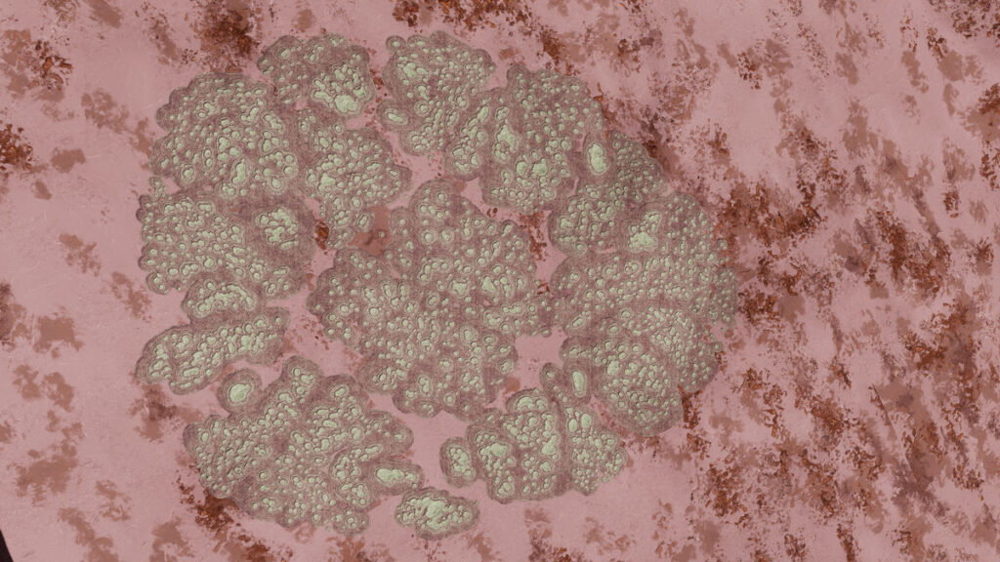
A sunlight-converting Bacterial Species on worlds with atmospheres dominated by water and sulphur dioxide. Their colonies resemble a brain-shaped mass of smaller connected cells.
Planetary Body Type: High Metal Content (74%), Rocky (25%), Rocky Ice (1%)
Atmosphere: Sulphur Dioxide (94%), Water (6%)
Volcanism: Presence of multiple Volcanic materials in low volumes. Potentially indicates tolerance rather than preference.
| Minimum | Average | Maximum |
| 132.00 | 243.20 | 499.99 |
| Minimum | Average | Maximum |
| 0.000987039447322971 | 0.00964969789768442 | 0.0986911315667407 |
| Minimum | Average | Maximum |
| 0.04 | 0.38 | 0.61 |
Galactic Arm Preference: No Preference
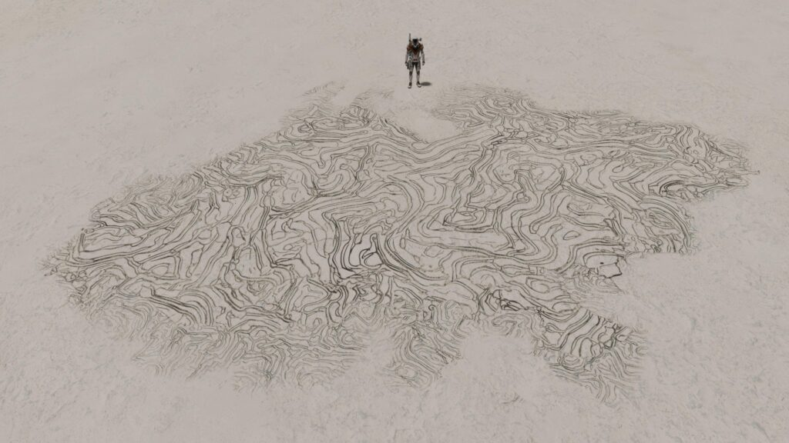
A Bacterial Species that converts energy from neon-based atmospheres, creating looping whirls of bright colour.
| Material | Antimony | Polonium | Ruthenium | Technetium | Tellurium | Yttrium |
| Variant | Cyan | Magenta | Cobalt | Lime | White | Aquamarine |
Planetary Body Type: Ice (99%) or Rocky Ice (1%)
Atmosphere: Neon
Volcanism: Low numbers existing on planets with Volcanic activity. Potentially indicates tolerance rather than preference.
| Minimum | Average | Maximum |
| 20.00 | 36.06 | 138.48 |
| Minimum | Average | Maximum |
| 0.000987067989143844 | 0.001987102307816642 | 0.0787054727954602 |
| Minimum | Average | Maximum |
| 0.26 | 0.42 | 0.61 |
Galactic Arm Preference: No Preference
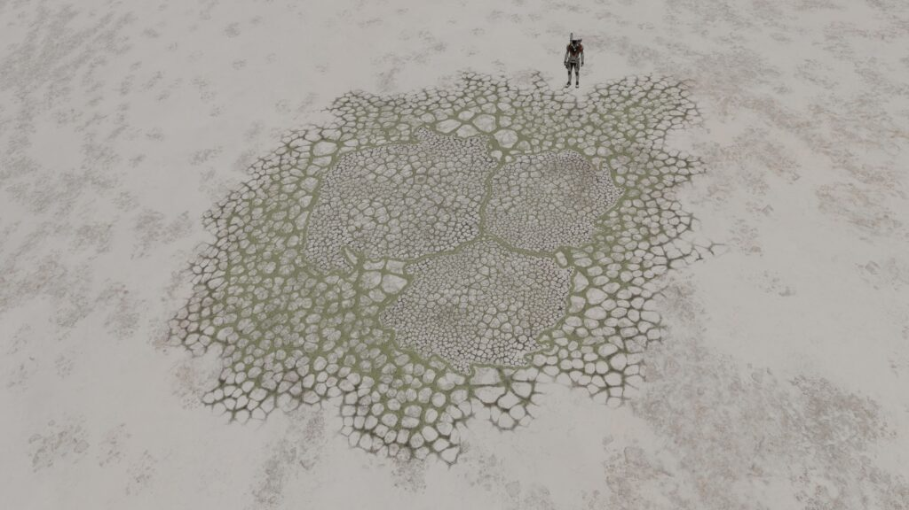
This Species of Bacteria thrives on atmospheric methane, appearing as a network of linked bubble patterns.
| Material | Antimony | Polonium | Ruthenium | Technetium | Tellurium | Yttrium |
| Variant | Cobalt | Yellow | Aquamarine | Gold | Lime | Red |
Planetary Body Type: High Metal Content (1%), Ice (94%) Rocky (4%) or Rocky Ice (1%)
Atmosphere: Methane
Volcanism: Low numbers existing on planets with Volcanic activity. Potentially indicates tolerance rather than preference.
| Minimum | Average | Maximum |
| 50.49 | 95.56 | 140.78 |
| Minimum | Average | Maximum |
| 0.000987067989143844 | 0.001987102307816642 | 0.0787054727954602 |
| Minimum | Average | Maximum |
| 0.02 | 0.04 | 0.60 |
Galactic Arm Preference: No Preference
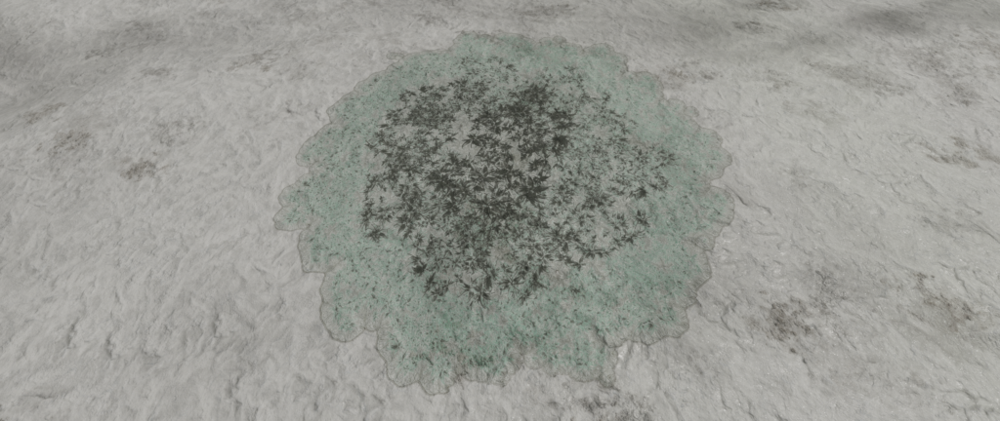
This Species of Bacteria can be found in nitrogen atmospheres and form a shapeless mass across the surface.
| Material | Antimony | Polonium | Ruthenium | Technetium | Tellurium | Yttrium |
| Variant | Red | Lime | Gold | Aquamarine | Yellow | Cobalt |
Planetary Body Type: High Metal Content (16%), Ice (72%), Rocky (6%) or Rocky Ice (6%)
Atmosphere: Nitrogen
Volcanism: Insignificant.
| Minimum | Average | Maximum |
| 43.60 | 79.59 | 149.72 |
| Minimum | Average | Maximum |
| 0.000987147051566741 | 0.012394625199959201 | 0.0986333522230447 |
| Minimum | Average | Maximum |
| 0.04 | 0.30 | 0.59 |
Galactic Arm Preference: No Preference
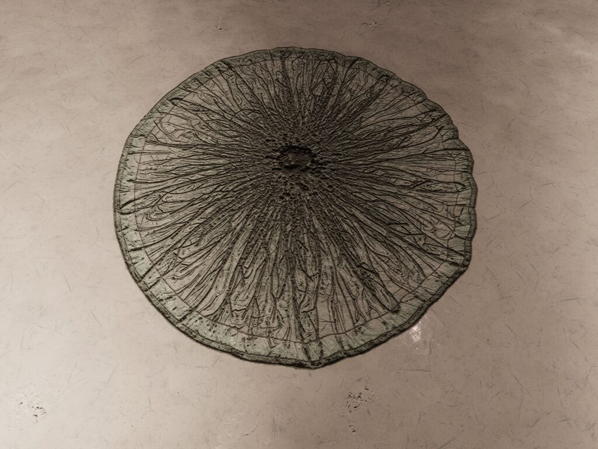
This Bacterial Species survives exclusively on atmospheric helium. They are distinguished by a radial pattern extending outward from the colony’s centre.
| Material | Antimony | Polonium | Ruthenium | Technetium | Tellurium | Yttrium |
| Variant | Magenta | Gold | Orange | Cyan | Green | Cobalt |
Planetary Body Type: Ice (100%)
Atmosphere: Helium
Volcanism: Volcanism: Low numbers existing on planets with Volcanic activity. Potentially indicates tolerance rather than preference.
| Minimum | Average | Maximum |
| 20.00 | 20.13 | 20.75 |
| Minimum | Average | Maximum |
| 0.0311333449987663 | 0.08377978167590132 | 0.098553791176906 |
| Minimum | Average | Maximum |
| 0.40 | 0.50 | 0.54 |
Galactic Arm Preference: No Preference. As at 31st August 3309 this bacterium had not yet been discovered in the Aquila’s Halo or Sagittarius-Carina Arm Regions.
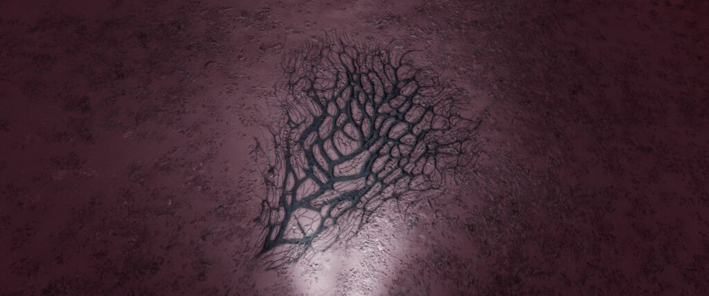
This Species of Bacteria convert geothermal heat from nitrogen-based volcanic sites into energy. They appear as long interlinked strands across the surface.
| Material | Cadmium | Mercury | Molybdenum | Niobium | Tin | Tungsten |
| Variant | Lime | White | Aquamarine | Peach | Red | Blue |
Planetary Body Type: Ice (100%)
Atmosphere: Argon (11%), Helium (1%), Methane (10%), Neon (78%)
Volcanism: Nitrogen or Ammonia Minor Magma
| Minimum | Average | Maximum |
| 20.02 | 52.84 | 306.80 |
| Minimum | Average | Maximum |
| 0.00100006262028127 | 0.013790407681277055 | 0.0986820815593388 |
| Minimum | Average | Maximum |
| 0.03 | 0.35 | 0.60 |
Galactic Arm Preference: No Preference
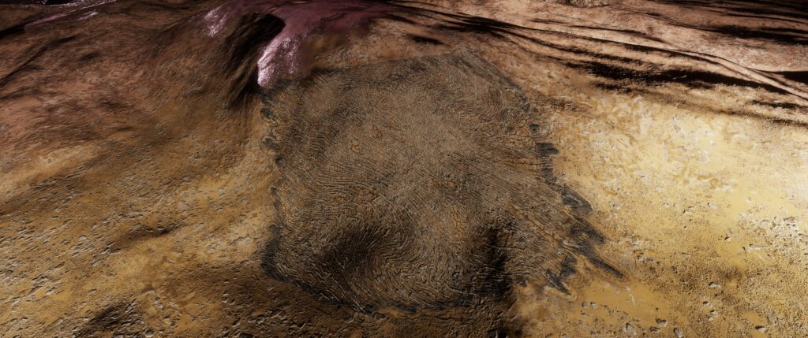
This Species of Bacteria thrives on the heat generated by carbon-based volcanic activity and appear as long swirling ridges on the surface.
| Material | Cadmium | Mercury | Molybdenum | Niobium | Tin | Tungsten |
| Variant | White | Peach | Lime | Red | Mulberry | Aquamarine |
Planetary Body Type: Ice (100%)
Atmosphere: Argon (10%), Helium (1%), Methane (16%), Neon (72%), Other Atmospheres (1%)
Volcanism: Carbon Dioxide Geysers or Minor Methane Magma
| Minimum | Average | Maximum |
| 20.00 | 51.79 | 281.34 |
| Minimum | Average | Maximum |
| 0.00105082743646681 | 0.02038966625900503 | 0.0986271068541821 |
| Minimum | Average | Maximum |
| 0.03 | 0.38 | 0.61 |
Galactic Arm Preference: No Preference. As at 31st August 3309 this bacterium had not yet been discovered in the Sagittarius-Carina Arm Region.
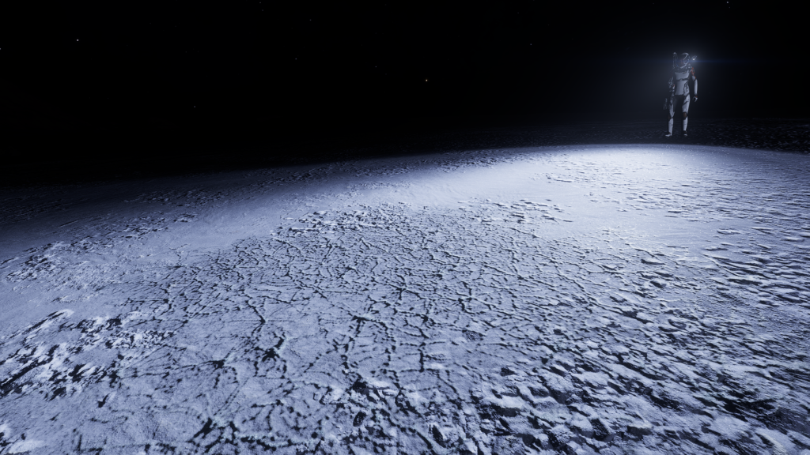
This Species of Bacteria appears as an intricate web pattern. They thrive in proximity to helium-based, iron-based and silicate-based volcanic sites.
| Material | Cadmium | Mercury | Molybdenum | Niobium | Tin | Tungsten |
| Variant | Gold | Orange | Yellow | Magenta | Cobalt | Green |
Planetary Body Type: High Metal Content (51%), Icy (26%), Rocky(23%)
Atmosphere: Argon (4%), Carbon Dioxide (11%),Methane (3%), Neon (19%), Sulphur Dioxide (45%), Water (17%), Other Atmospheres (1%)
Volcanism: Silicate Vapour and Carbon Dioxide Geysers of Major and Minor strength; Metallic, Rocky, Water, Ammonia, Methane, Nitrogen Magma of Major and Minor strength.
| Minimum | Average | Maximum |
| 20.00 | 279.17 | 630.93 |
| Minimum | Average | Maximum |
| 0.000987961302738712 | 0.027338698624222453 | 0.0986840669726129 |
| Minimum | Average | Maximum |
| 0.03 | 0.38 | 0.61 |
Galactic Arm Preference: No Preference
This Species of Bacteria appears as an intricate web pattern. They show a preference for exclusively water-based volcanic activity.
| Material | Cadmium | Mercury | Molybdenum | Niobium | Tin | Tungsten |
| Variant | Peach | Red | White | Mulberry | Blue | Lime |
Planetary Body Type: Icy (97%), Rocky(1%) or Rocky Ice World (2%)
Atmosphere: Ammonia (1%), Argon (21%), Helium (3%), Neon (72%), Other Atmospheres (3%)
Volcanism: Water Magma and Geysers of Major and Minor strength
| Minimum | Average | Maximum |
| 20.00 | 55.65 | 441.04 |
| Minimum | Average | Maximum |
| 0.000998541633358006 | 0.0189093944310877 | 0.0986041685961016 |
| Minimum | Average | Maximum |
| 0.03 | 0.44 | 0.61 |
Galactic Arm Preference: No Preference. As at 31st August 3309 this bacterium had not yet been discovered in the Aquila’s Halo region.
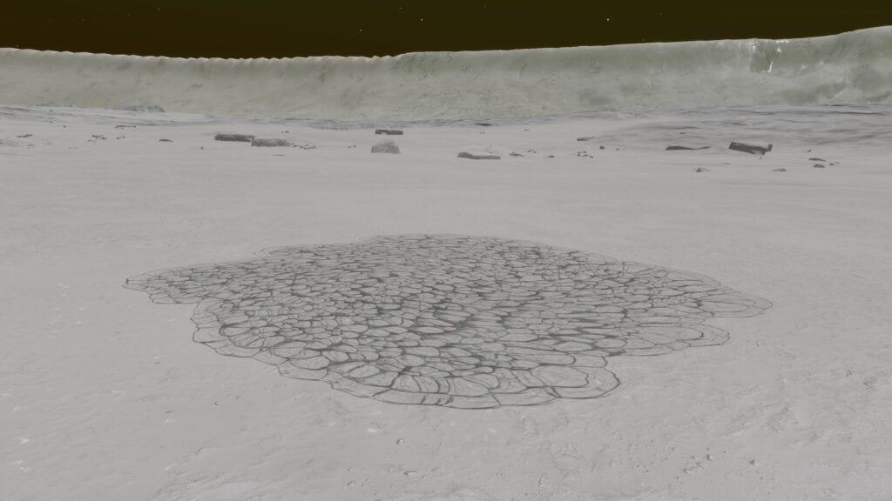
This Species of Bacteria survives on worlds with argon atmospheres and appears as a collection of tight loops on the ground.
| Material | Cadmium | Mercury | Molybdenum | Niobium | Tin | Tungsten |
| Variant | Cyan | Orange | Mulberry | Gold | Red | LIme |
Planetary Body Type: High Metal Content (1%), Icy (87%) or Rocky Ice World (12%)
Atmosphere: Argon
Volcanism: Low numbers existing on planets with Volcanic activity. Potentially indicates tolerance rather than preference.
| Minimum | Average | Maximum |
| 45.18 | 76.66 | 266.61 |
| Minimum | Average | Maximum |
| 0.00098695278559092 | 0.012677274813015076 | 0.0984724181889958 |
| Minimum | Average | Maximum |
| 0.03 | 0.18 | 0.51 |
Galactic Arm Preference: No Preference
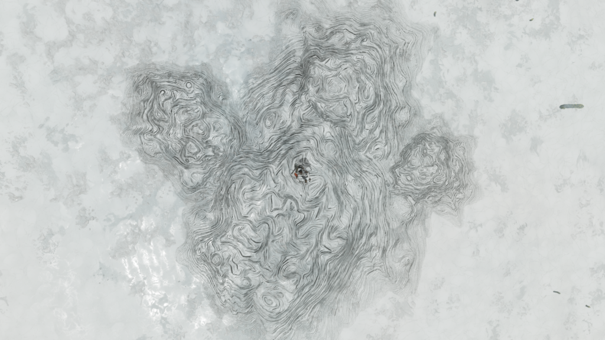
This Species of Bacteria is dependent upon oxygen atmospheres and creates random swirling patterns across the ground.
| Material | Antimony | Polonium | Ruthenium | Technetium | Tellurium | Yttrium |
| Variant | Red | Aquamarine | Cobalt | Lime | Cyan | Gold |
Planetary Body Type: High Metal Content (9%), Icy (71%), Rocky (1%) or Rocky Ice World (19%)
Atmosphere: Oxygen
Volcanism: Insignificant.
| Minimum | Average | Maximum |
| 143.80 | 182.64 | 245.82 |
| Minimum | Average | Maximum |
| 0.00475579250925241 | 0.054373042653070594 | 0.0985708888527017 |
| Minimum | Average | Maximum |
| 0.05 | 0.34 | 0.60 |
Galactic Arm Preference: No Preference